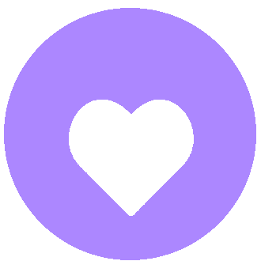
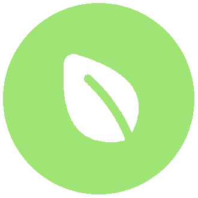
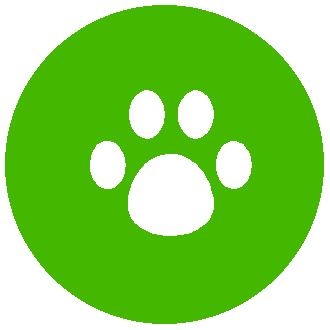
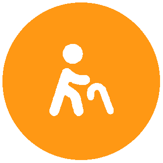
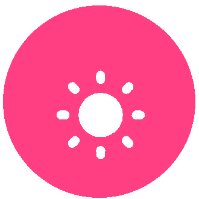
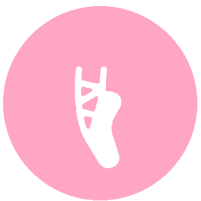

O Que Fazemos
Os Nossos Projetos
10 projetos de voluntariado focados na saúde, na natureza e no apoio a crianças, idosos e comunidades, promovendo a cultura e os direitos humanos.
Os Nossos Projetos
A VO.U. organiza os seus projetos em 3 planos de ação: Plano Vida (saúde, natureza e bem-estar animal), Plano Mundo (direitos humanos e cidadania) e Plano Ponte (apoio social e cultura).

VO.U. Cuidar
Promover interações positivas e inclusão
O que fazemos?
- Acompanhamento de utentes institucionalizados e dinamização de atividades lúdicas (jogos, leitura, música, dança, pintura)
- Palestras "Quando for grande VO.U. Cuidar" para sensibilização de jovens sobre Educação Inclusiva e Gestão de Stress
- Atividades em colaboração com outros projetos da associação
O que fazemos?
- Limpeza de espaços verdes urbanos e faculdades
- Proteção, limpeza e monitorização de habitats aquáticos e terrestres
- Palestras, workshops e campanhas de sensibilização ambiental
- Debates e documentários sobre ameaças ao ambiente e ação climática

VO.U. pela Natureza
Sensibilização e intervenção ambiental

VO.U. pelos Animais
Dar voz a quem não a tem
O que fazemos?
- Apoio a associações parceiras na manutenção dos abrigos e interação direta com os animais
- Atividades em quintas ecológicas com contacto com animais de grande porte
- Eventos de angariação de donativos e recolhas de bens
- Sensibilização para o bem-estar animal através de formações e atividades educativas
O que fazemos?
- Ações de formação teórico-práticas em instituições, escolas e faculdades
- Ensino de princípios básicos de socorrismo
- Formação em Suporte Básico de Vida, Enfarte, AVC, Epilepsia, Engasgamento, Feridas e Queimaduras
VO.U. Socorrer
Capacitar para salvar vidas
VO.U. Olhar o Mundo
Pensar Global, Agir Local
O que fazemos?
- Palestras, workshops e formações sobre saúde mental, direitos humanos e sustentabilidade
- Debates, documentários e conversas com especialistas
- Recolha de bens alimentares com o Banco Alimentar
- Conteúdos informativos para redes sociais
O que fazemos?
- Sessões de formação em escolas primárias, básicas e secundárias
- Temáticas: Direitos Humanos, Bullying, Migrações, Inteligência Emocional e mais
- Incentivo ao pensamento crítico e combate à desinformação
VO.U. Formar
O conhecimento é o primeiro passo para a liberdade

VO.U. Acompanhar
Uma ponte entre gerações
O que fazemos?
- Visitas semanais a domicílios, lares ou centros de dia
- Promoção da saúde e combate à exclusão social
- Laços intergeracionais: troca de correspondência entre idosos e crianças do VO.U. Crescer
O que fazemos?
- Suporte educativo: acompanhamento nos trabalhos de casa e rotinas de estudo
- Dinâmicas lúdicas e organização de rotinas diárias
- Motivação e proximidade com estudantes universitários
- Intervenção integrada com outros projetos da VO.U.

VO.U. Crescer
Educação e afeto para o futuro

VO.U. Pirueta
A dança como ferramenta de inclusão
O que fazemos?
- Pirueta Júnior: aulas de dança em ATLs e Casas de Acolhimento para crianças
- Pirueta Sénior: atividade física e lazer em lares e centros de dia
- Workshops solidários e Espetáculo Final com instituições parceiras
O que fazemos?
- Projetos de intervenção cultural junto de crianças e idosos
- Autonomia criativa: desenvolvimento de projetos pessoais dos voluntários
- Eventos e iniciativas coletivas de maior escala
- Rede colaborativa com associações parceiras e outros projetos da VO.U.
VO.U. Rodar Cultura
Arte e cultura como direitos universais